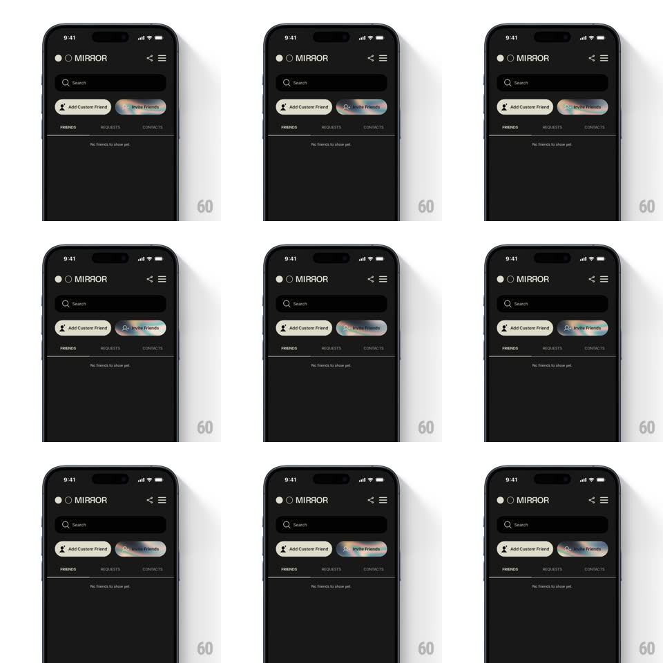

Media
Frame-by-frame

Rebuild this animation 1:1: Mirror's friends screen - the "Invite Friends" pill carries a living holographic gradient that never stops shifting, against an otherwise still dark screen.

Rebuild this animation 1:1: Mirror's friends screen - the "Invite Friends" pill carries a living holographic gradient that never stops shifting, against an otherwise still dark screen. ## Integration Integration: stack-agnostic spec - springs given as stiffness/damping, timed motions as duration + curve; map every value to your framework and animation library of choice. ## Scene Mirror's dark friends tab: the MIRROR wordmark, share and menu icons, a Search field, two pills side by side - "Add Custom Friend" (dark, person-plus icon) and "Invite Friends" (bright) - the FRIENDS / REQUESTS / CONTACTS tab row, and the empty state "No friends to show yet." ## Motion spec Pattern: continuous holographic gradient flowing inside a single button. - The Invite Friends pill is filled with a holographic swirl - soft pink, mint, ice blue, and pale gold bleeding into each other - rendered as a slowly moving mesh/conic gradient clipped to the pill's rounded rect. - The gradient drifts and rotates continuously (one full hue cycle ~8s, position drifting ~30% of the pill width per pass) - it never repeats exactly and never pauses. - The label and its sparkle icon stay dark and static over the moving fill - text never shifts with the gradient. - The rest of the screen is completely still: no other element animates - the eye goes to the pill because nothing else moves. ## Calibration - The fill stays soft and pearlescent - no hard color bands, no neon saturation; it should read as light on foil. - The pill is compact - the gradient must stay smooth at small size, no visible tiling seams. ## Reduced motion Freeze the gradient at a mid-cycle frame. ## Don't miss - Only the invite pill carries the gradient - the "Add Custom Friend" pill stays plain dark; the contrast is the hierarchy. - The empty state beneath is the context: this button is the whole point of the screen.